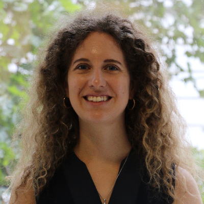

Good vibes in life brings the most in every other field
Mathematician - Researcher - Scientific Writing - Planning
I bring rigour and creativity to every project.
About

Research background,
industry mindset
I come from Italy and hold a PhD in Earth Science, Fluid Dynamics and Mathematics from the University of Trieste.
I was a postdoctoral researcher at the Computational Science Center at the University of Vienna hired as a Scientific Coordinator of the SFB Project "Tomography across the scales". I am currently transitioning to industry.
Inverse Problems for PDEs: stability analysis
Python
Matlab
Scientific Writing
Project Planning
Projects
01
Educational Laboratory - Archaeological Challenge
Jupyter notebooks for the ArcheoLab course at the University of Vienna.
View on GitHubContact
GitHub LinkedIn